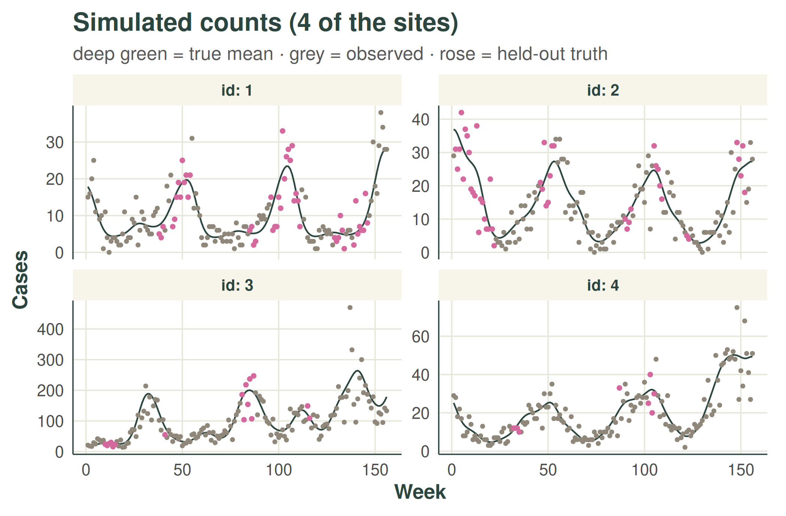
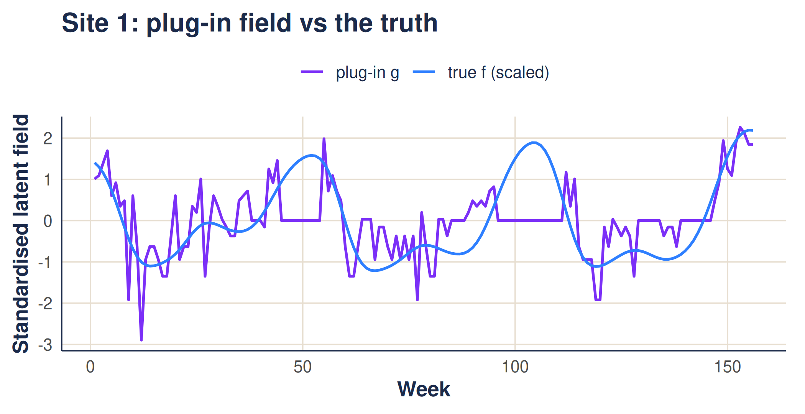
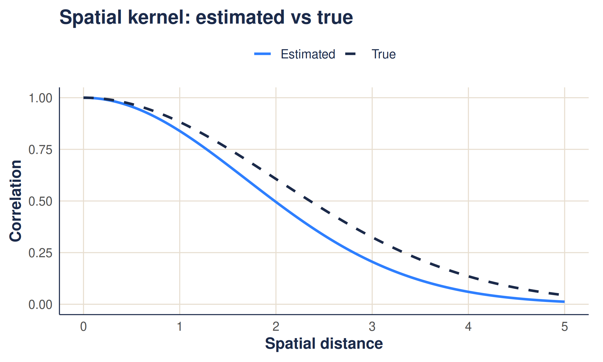
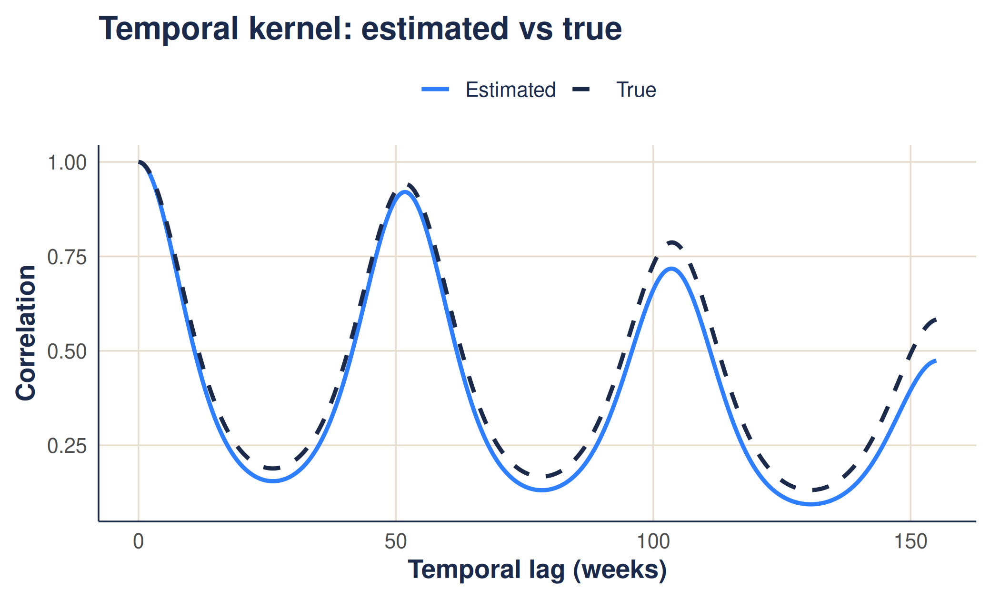
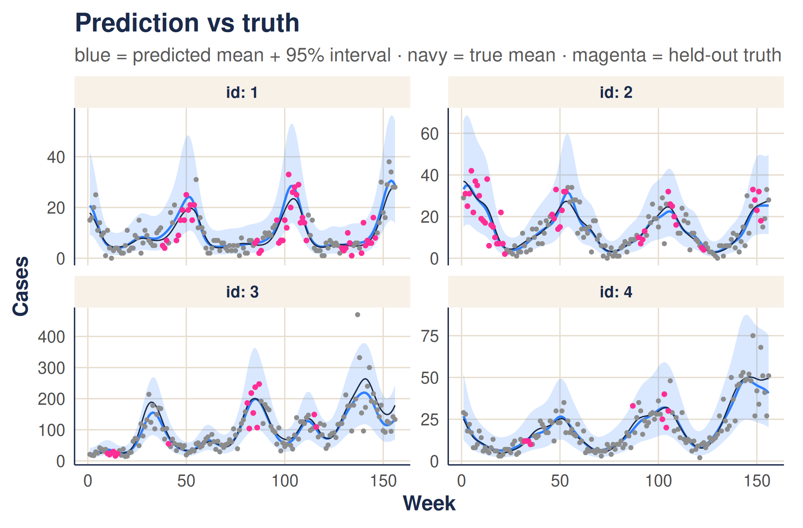

The weave walkthrough: estimating kernels and predicting rates
walkthrough.RmdThis article is a complete walkthrough of how weave
turns noisy, gappy count data into a smooth estimate of an underlying
rate. If the ideas of a Gaussian process and a kernel are new, the
companion gentle
introduction builds them up first; here we apply them. The
walkthrough has two halves:
- Estimate the kernel hyperparameters — the handful of numbers that say how quickly counts become uncorrelated as we move apart in space and in time.
-
Use them to predict — denoise the observed counts,
fill in the missing weeks, and place an honest
prediction interval around every estimate with
gp_predict().
We use a small simulated example with a known answer (including known missing weeks), so we can watch the method recover the truth. At each stage we give the maths, a plain-language explanation, and the worked example.
The method is deliberately quick: a fast, deterministic estimate rather than a full Bayesian fit. The approximations that buy that speed are listed honestly at the end.
1. The model
We observe a count y at every site s (a
health facility) and time t (a week), and assume
- is a per-site baseline (some facilities are simply busier).
- is a smooth latent field — the part that varies up and down in space and time.
- and are kernels: they set how correlated two cells are as a function of their separation.
- is the Kronecker product — the full space-time covariance is built from a small spatial kernel and a small temporal kernel (“separable”).
The kernels carry three hyperparameters — the knobs we want to estimate:
-
length_scale— how far apart two sites must be before they stop looking alike (spatial RBF kernel); -
periodic_scale— how sharply the yearly season rises and falls; -
long_term_scale— how slowly the year-on-year level drifts.
Each facility has a smooth underlying rate of cases. Nearby facilities, and nearby weeks, tend to look similar; far-apart ones drift. The three knobs control how quickly that resemblance fades with distance in space and in time. Our whole task is to read those three numbers off the data.
The worked example
We simulate data with chosen true knobs, so we can check the
answer. The small helpers that draw the counts and punch clustered gaps
into them (simulate_data(), observed_data())
are example scaffolding, not part of the package, so they are hidden
here.
# example dimensions
n <- 20 # sites (health facilities)
nt <- 52 * 3 # weeks (3 years)
period <- 52 # weeks per seasonal cycle
# the "true" kernel knobs we will try to recover
true_length_scale <- 2 # spatial smoothness
true_periodic_scale <- 1.1 # how sharp the season is
true_long_term_scale <- 150 # long-run drift
true_r <- 15 # Negative-Binomial dispersion
# site coordinates and per-site baseline log-rate (mu_s)
coordinates <- data.frame(
id = factor(1:n),
lon = runif(n, 0, 5),
lat = runif(n, 0, 5),
mu = log(runif(n, 10, 80))
)
# build the true kernels, draw counts, then hide clustered gaps.
# `obs_data` is all that weave sees: columns id, t, y_obs (NA = missing).
space_k <- space_kernel(coordinates, length_scale = true_length_scale)
time_k <- time_kernel(1:nt, periodic_scale = true_periodic_scale,
long_term_scale = true_long_term_scale, period = period)
true_data <- simulate_data(n, nt, coordinates, space_k, time_k, r = true_r)
obs_data <- observed_data(true_data)
cat(sprintf("%.0f%% of weeks are missing\n", 100 * mean(is.na(obs_data$y_obs))))
#> 14% of weeks are missingHere are the first four sites. The navy line is the true underlying mean (); grey points are the counts we actually observe; and magenta points are the held-out truth at the weeks that went missing — what the model must reconstruct but never gets to see.

2. Step 1 — a quick “plug-in” latent field
We cannot see the latent field directly, so we build a cheap stand-in from the counts:
that is, take , then for each site subtract that site’s mean and divide by its standard deviation.
The logarithm turns the multiplicative “rate” scale into an additive one that matches . Subtracting each site’s average removes the baseline (which we do not care about here), and dividing by the spread puts every site on the same footing, so a single set of knobs applies to all of them. It is noisy — but it is instant.
The worked example
# the plug-in field: per-site centred & scaled log(1 + y), as one long vector
# (length n * nt, with time varying fastest)
g <- build_plugin_field(obs_data, n = n, nt = nt)
str(g)
#> num [1:3120] 1.008 1.094 1.391 1.692 0.603 ...For one site, the plug-in field tracks the true latent field, just with observation noise layered on top:

3. Step 2 — score a set of knobs with the marginal likelihood
For a candidate set of hyperparameters the kernels give a covariance . We add a nugget — a noise term — and a global variance :
where are correlation kernels (unit diagonal). The score for is the log marginal likelihood
We pick the that maximises this. The variance has a closed-form optimum, so we “profile” it out and never search over it.
For any guess at the knobs we can ask: how plausible is the plug-in field if the world really had this much smoothness? The first term () penalises over-flexible kernels (an “Occam” penalty); the second rewards kernels that explain the field well. We turn the dial until the score is best.
The nugget is the important addition: a slice of pure noise the model may attribute to observation error rather than signal. Without it the kernel would have to explain the noisy plug-in field with smoothness alone, badly distorting the length-scales.
4. Step 3 — why it is fast: the Kronecker trick
The full covariance is — here 3120 square. We never form it. Because it is a Kronecker product, eigendecomposing the small factors (size ) and (size ) is enough:
with the eigenvalues, , and the field reshaped to . The cost is instead of .
A separable kernel means space and time can be handled separately. So instead of one enormous matrix we juggle two small ones — one for space, one for time — which is dramatically cheaper and gives the exact same answer. This is why the estimate takes a second rather than hours.
5. Step 4 — fit, and check against the truth
infer_kernel_params() does all of the above: build the
plug-in field, then maximise the marginal likelihood over the three
length-scales plus the nugget ratio.
# maximise the GP marginal likelihood to recover the three length-scales
# (plus a noise/nugget ratio); the global variance sigma^2 is profiled out.
est <- infer_kernel_params(obs_data, coordinates, nt = nt, period = period)
# did we recover the knobs we simulated from?
data.frame(
parameter = c("length_scale", "periodic_scale", "long_term_scale"),
truth = c(true_length_scale, true_periodic_scale, true_long_term_scale),
estimate = round(c(est$length_scale, est$periodic_scale, est$long_term_scale), 2)
)
#> parameter truth estimate
#> 1 length_scale 2.0 0.89
#> 2 periodic_scale 1.1 0.75
#> 3 long_term_scale 150.0 55.08
# the other two pieces estimation returns: the nugget and the profiled variance
cat(sprintf("nugget ratio (noise/signal) = %.2f; profiled sigma^2 = %.2f\n",
est$nugget_ratio, est$sigma2))
#> nugget ratio (noise/signal) = 0.49; profiled sigma^2 = 0.51The clearest check is to draw the fitted kernels (blue) on top of the true ones (navy, dashed). If the method worked, they overlap.


6. Predict: smoothing, gap-filling, and prediction intervals
With the kernels estimated, we put them to work: clean up the noise,
fill in the missing weeks, and say how uncertain each estimate
is. A single function, gp_predict(), does all three.
gp_predict() conditions a separable Gaussian process on
the observed cells only. The posterior
mean of the latent field comes from one matrix-free
solve,
(
selects the observed cells), so it is smooth and deterministic. The
posterior variance is estimated from
n_draws perturbation draws. The latent-rate posterior is
then combined with Negative-Binomial observation noise, via the
law of total variance and a lognormal moment-match, to
give a 95% count prediction interval:
Because it conditions on the observed set, missing weeks are filled by genuine GP interpolation, and their interval can widen over gaps — unlike a smoother that quietly mean-imputes the gaps. A future count is uncertain for two reasons: we are unsure of the underlying rate, and counts scatter around any given rate. An honest interval includes both. The dispersion — how overdispersed the counts are — is the one quantity this quick method does not estimate from the likelihood, so it is recovered by method of moments from the observed counts.
The worked example
The call returns one row per site-week with the posterior
rate and, because n_draws >= 1, a 95%
interval (lower, upper). The dispersion
r used is attached as an attribute.
# condition the GP on the observed cells and predict every site-week.
# n_draws controls how many posterior draws estimate the interval width.
pred <- gp_predict(obs_data, coordinates, hyperparameters = est,
nt = nt, period = period, n_draws = 100)
head(pred) # one row per cell: id, t, rate, and the 95% interval
#> id t rate lower upper
#> 1 1 1 20.74727 9.167142 41.93390
#> 2 1 2 19.82157 8.916195 39.25267
#> 3 1 3 18.13293 8.176709 35.66125
#> 4 1 4 15.86018 7.056011 31.39392
#> 5 1 5 13.33049 5.769388 26.84454
#> 6 1 6 10.89283 4.532828 22.49001
attr(pred, "r") # the NB dispersion used for the interval (estimated)
#> [1] 13.48056The blue line is the predicted mean rate and the blue band the 95% prediction interval. It should track the navy true-mean line and cover the points — including the magenta held-out weeks it never saw.

Did we fill the gaps well?
The honest test is the held-out weeks: does the 95% interval contain the counts the model never saw? It should, about 95% of the time.
# keep only the held-out weeks (those the model never saw), with the true rate
held_out <- merge(df_miss[, c("id", "t", "lambda", "y")], pred_df,
by = c("id", "t"))
# coverage: fraction of held-out counts inside the 95% interval (target ~0.95)
mean(held_out$y >= held_out$lower & held_out$y <= held_out$upper)
#> [1] 0.9290466
# how well the predicted rate tracks the true rate at those weeks
cor(held_out$rate, held_out$lambda)
#> [1] 0.9853691If the coverage lands near 95% the bands are honest; if the predicted rate correlates strongly with the true rate, the gap-filling is doing its job. Both can drift a little here because this is a small example and the quick method does not propagate every source of uncertainty (see below).
7. Caveats and approximations
This is a fast, deterministic estimate — not a full posterior. The shortcuts that make it quick also limit it:
-
Plug-in, not Bayesian. We condition on a single
noisy estimate of the latent field rather than integrating it out. This
attenuates the length-scales (
periodic_scaleandlong_term_scaletend to come out a little low). The nugget mitigates this but does not remove it. -
log(1 + y)is a crude stand-in for the latent log-rate, and is poorest at very low counts. - Per-site scaling folds all per-site variance into a single global and amplifies noise at low-count sites.
- One homoscedastic nugget. Real count noise is heteroscedastic (it grows with the rate); we summarise it with a single ratio .
-
Hyperparameter fitting mean-imputes missing cells
in the plug-in field (though
gp_predict()does not — it conditions on the observed cells, so its interval widens over gaps). - The dispersion is recovered by a rough method of moments, so the width of the count prediction interval inherits that error.
- A point estimate. We report the maximiser, with no uncertainty on the hyperparameters themselves.
For a quick, honest summary of the spatial and temporal correlation structure — or a sensible starting point for a fuller model — it does the job in about a second.